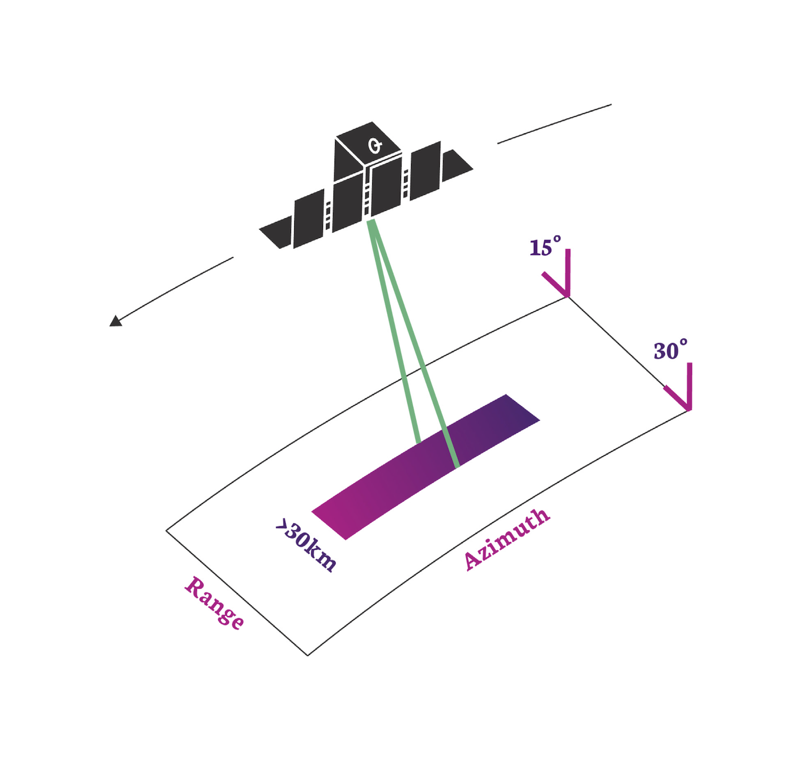
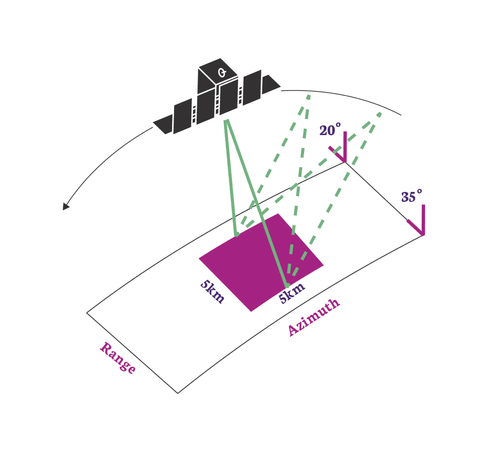

TYPES OF SAR COLLECTION
ICEYE satellites operate in one of three primary imaging modes called Strip Mode, Spot Mode and Scan Mode. These are available in both right and left-looking configurations. The design flexibility of our satellites allows their imaging modes to be continually evolved. We will be adding more modes, and more flexible illumination patterns, in future versions. A recent addition is an augmentation to our spotlight collections that we are calling Dwell imaging.
On this page we provide an overview of each of the imaging modes. How the collection modes are packaged and delivered is covered in the secion on SAR data products. Technical details on the content of the data products and how to exploit them is covered in the Technical information section. An explanation of SAR and how the imaging modes are collected can be found in An Overview of SAR Imaging.
Strip Imaging
 In this mode the ground swath is illuminated with a continuous sequence of pulses while the antenna beam is fixed in its orientation. The beam is pointed off to the side of the satellite at an angle broadside to the satellite flight path. This results in a long image strip parallel to the flight direction.
ICEYE standard Strip products have a ground resolution of 3m in range and azimuth and cover an area of 30km (range) by 50km (azimuth). The strip length can be tailored up to a length of 840 km, in increments of 50 km.
Info
Having a wide area and a moderate resolution, Strip images are useful for 'situational awareness'. They allow a user to quickly asses what is occurring in the region. They are particularly useful for tasks such as deforestation monitoring, or iceberg / glacier monitoring. They are also our 'first responder' product in times of natural disaster to assess the impact of a flood, earthquake or volcano.
Scan Imaging
 This mode uses each satellite's phased array antenna to create multiple beams in the elevation direction. This beam steering illuminates a wide area via multiple adjacent strips, but it means that points on the ground are not illuminated for as long as conventional Strip Mode. This reduces the resolution of a Scan product.
This mode uses each satellite's phased array antenna to create multiple beams in the elevation direction. This beam steering illuminates a wide area via multiple adjacent strips, but it means that points on the ground are not illuminated for as long as conventional Strip Mode. This reduces the resolution of a Scan product.
In conventional scan mode, ground points are illuminated by different parts of the radar beam resulting in brighter and darker regions in the image. We compensate for this in our scan by also steering the radar beam sideways during each burst of radar pulses. This improves image quality. This technique is called Terrain Observation by Progressive Scans (TOPS or TOPSAR1). Our Scan product produces imagery that covers an area of 100km x 100km with a resolution better than 15m. The length of a Scan product can be increased to 840km.
Note
Having the largest area coverage and a modest resolution, Scan images are highly suited to wide area surveillance and mapping projects. Being able to operate in all weather and lighting conditions, they provide an excellent opportunity to image the oceans and to detect ships and monitor shipping lanes.
Caution
Scan mode products are not radiometrically calibrated. Whilst imagery is visually and spatially exploitable, there may be slight errors when converting image sample values to a mean RADAR cross section number.
| PARAMETER | STRIP | SCAN | COMMENTS |
|---|---|---|---|
| Product Short Name | 'SM' | 'SC' | Note 1 |
| Nominal final product ground resolution [m] | 3 | 15 | |
| Radar Beams Used | 1 | 4 | Note 2 |
| Nominal swath width [km] | 30 | 100 | Note 3 |
| Nominal product length (Azimuth Direction) [km] | 50 | 100 | Note 4 |
| Nominal collection duration [sec] | 10 | 15 | |
| Maximum collection duration [sec] | 120 | 120 | Note 5 |
| Maximum Scene Length [km] | 840 | 840 | Note 5 |
| Noise Equivalent Sigma-Zero [ dBm2/m2 ] | -21.5 to -20 | -22.2 to -21.5 | Note 6 |
| Azimuth Ambiguity Ratio [dB] | -17 | -17 | |
| Range Ambiguity Ratio [dB] | <-20 | <-20 | |
| Geospatial Accuracy [m RMSE] | 6 | 15 | Note 14 |
| ESA Copernicus Contributing Mission (CCM) Class[2][3][4][5] | VHR2 | VHR2 | |
| Polarization | VV | VV | |
| RNIIRS | 3.6 | 2.1 | Note 8 |
| RGIQE [bits/\(m^2\)] | 0.8 | 0.1 | Note 9 |
| Performant Incidence Range [deg] | 15-35 | 21-29 | Note 12 |
| Time Dominant Incidence Range [deg] | 5-45 | N/A | Note 13 |
Spotlight Modes
Spot Imaging
 In Spot mode the radar beam is steered to illuminate a fixed point. This increases the illumination time and therefore increases the length of the synthetic aperture and improves azimuth resolution. ICEYE satellites have a maximum 600 MHz pulse bandwidth which can achieve a 0.25m slant range resolution (here is an explanation of where this comes from.).
ICEYE's standard Spot collection uses a 300 MHz transmit bandwidth and covers an area of 5km x 5km. This produces an image with a 1 m ground resolution for multi-looked amplitude images. These are formed from 4 independent looks to suppress speckle and increase image quality.
Note
Spot images are useful for more detailed investigation of an area. They are used primarily to discriminate between different types of object such as boats or ships, different aircraft, or different types of building or infrastructure. The additional resolution also helps with coherence analysis techniques such as INSAR.
Spot Fine
Spot Fine is the constellation's finest resolution imaging mode using a 600 MHz transmit bandwith (0.25 m slant range resolution). It operates the same way as Spot mode, by pointing the RADAR beam at a single location for an extended amount of time. Each Spot Fine collection has 5 indepent azimith looks and takes around 15 seconds to collect.
| PARAMETER | SPOT | SPOT FINE | COMMENTS |
|---|---|---|---|
| Product Short Name | 'SLH' | 'SLF' | Note 1 |
| Nominal final product ground resolution [m] | 1 | 0.5 | |
| Radar Beams Used | 1 | 1 | Note 2 |
| Nominal swath width [km] | 5 | 5 | Note 3 |
| Nominal product length (Azimuth Direction) [km] | 5 | 5 | Note 4 |
| Nominal collection duration [sec] | 10 | 15 | |
| Maximum collection duration [sec] | N/A | N/A | Note 5 |
| Maximum Scene Length [km] | 5 | 5 | Note 5 |
| Noise Equivalent Sigma-Zero [ dBm2/m2 ] | -18 to -15 | -15 to -11 | Note 6 |
| Azimuth Ambiguity Ratio [dB] | -17 | -17 | |
| Range Ambiguity Ratio [dB] | <-20 | <-20 | |
| Geospatial Accuracy [m RMSE] | 6 | 6 | Note 14 |
| ESA Copernicus Contributing Mission (CCM) Class[2][3][4][5] | VHR1 | VHR1 | |
| Polarization | VV | VV | |
| RNIIRS | 5.5 | 6.3 | Note 8 |
| RGIQE [bits/\(m^2\)] | 22 | 83 | Note 9 |
| Performant Incidence Range [deg] | 20-35 | 20-35 | Note 12 |
| Time Dominant Incidence Range [deg] | 11-44 | 11-44 | Note 13 |
Spot Extended Area
In Spotlight Extended Area (SLEA) mode we take a spotlight image by pointing the satellite at a location farther away, instead of at a point on the ground. The spot is seen to 'slide' over the ground which is why SLEA is also known as Sliding Spot mode. This means that more area is imaged than in standard Spot mode, but also each pixel in the scene is now no longer illuminated over the same range of angles. This implies a reduced resolution, but we can recover that by starting the spotlight operation earlier and finishing later.
Within the covered area of 15km x 15km we achieve a 1 m ground resolution for multi-looked amplitude images. In comparison to the Spot mode we trade off a number of looks for extra area covered in SLEA. The Spot mode has 4 looks while SLEA has 1-2 looks instead. Due to the smaller number of looks the speckle noise in the imagery is slightly higher.
Note
The coverage of SLEA is a really nice choice because we can get a nine times greater coverage and the same ground resolution as with standard Spot mode. The SLEA mode can also be seen as big improvement over the Strip mode while still covering a quite large area of interest.
.
| PARAMETER | SPOT EXTENDED AREA | COMMENTS |
|---|---|---|
| Product Short Name | 'SLEA' | Note 1 |
| Nominal final product ground resolution [m] | 1 | |
| Radar Beams Used | 1 | Note 2 |
| Nominal swath width [km] | 15 | Note 3 |
| Nominal product length (Azimuth Direction) [km] | 15 | Note 4 |
| Nominal collection duration [sec] | 10 | |
| Maximum collection duration [sec] | N/A | Note 5 |
| Maximum Scene Length [km] | 15 | Note 5 |
| Noise Equivalent Sigma-Zero [ dBm2/m2 ] | -18 to -15 | Note 6 |
| Azimuth Ambiguity Ratio [dB] | -17 | |
| Range Ambiguity Ratio [dB] | <-20 | |
| Geospatial Accuracy [m RMSE] | 6 | Note 14 |
| ESA Copernicus Contributing Mission (CCM) Class[2][3][4][5] | VHR1 | |
| Polarization | VV | |
| RNIIRS | 5.5 | Note 8 |
| RGIQE [bits/\(m^2\)] | 8.4 | Note 9 |
| Performant Incidence Range [deg] | 20-35 | Note 12 |
| Time Dominant Incidence Range [deg] | 11-44 | Note 13 |
Dwell Imaging
ICEYE's Dwell collection mode is a very long spotlight mode SAR collection. The techinique is not so easy to achieve with larger satllites, but the smaller mass and antenna size of ICEYE satellites allows them to stare at the same point for as long as 25 seconds. Applying conventional image formation techniques to this type of SAR collection would provide a very fine azimuth resolution, which when combined with a standard range resolution would make a SAR image product that is challenging to exploit by human analysts.
The collection does however contain significantly more information than a standard spotlight mode SAR image and so ICEYE has developed two additional image products, CSI and video, in addition to the standard amplitude and complex image products. These products are discussed more in 'Types of SAR Data Products'.
Note
Dwell imaging is a good collection strategy for getting the most information from complex scenes, such as human objects in forested areas or moving objects such as ships.
| PARAMETER | SPOT EXTENDED DWELL | COMMENTS |
|---|---|---|
| Product Short Name | 'DWELL' | Note 1 |
| Nominal final product ground resolution [m] | 1 | |
| Radar Beams Used | 1 | Note 2 |
| Nominal swath width [km] | 5 | Note 3 |
| Nominal product length (Azimuth Direction) [km] | 5 | Note 4 |
| Nominal collection duration [sec] | 25 | |
| Maximum collection duration [sec] | 30 | Note 5 |
| Maximum Scene Length [km] | 5 | Note 5 |
| Noise Equivalent Sigma-Zero [ dBm2/m2 ] | -18 to -15 | Note 6 |
| Azimuth Ambiguity Ratio [dB] | -17 | |
| Range Ambiguity Ratio [dB] | <-20 | |
| Geospatial Accuracy [m RMSE] | 6 | Note 14 |
| ESA Copernicus Contributing Mission (CCM) Class[2][3][4][5] | VHR1 | |
| Polarization | VV | |
| RNIIRS | 6.5 | Note 8 |
| RGIQE [bits/\(m^2\)] | 125 | Note 9 |
| Performant Incidence Range [deg] | 20-35 | Note 12 |
| Time Dominant Incidence Range [deg] | 11-44 | Note 13 |
Notes and Explanations
- Short Name: For example, Strip mode has 'SM' : ICEYE_X7_GRD_SM_36535_20201020T175609
- Radar Beams: The current generation of ICEYE satellites use electronically steered elements to control multiple radar beams. Usually this is only one beam but Scan products use multiple beams to image different ranges (at the cost of reduced resolution)
- Nominal Swath Width: The actual image size will be slightly larger than this to guarantee that the tasked area is covered.
- Nominal Swath Length: The actual image length may be slightly larger to guarantee that the tasked area is covered. The maximum value can vary from satellite to satellite due to power/data/thermal limitations.
- Maximum Collection Duration/Length: Spot images do not have a maximum collection duration as they image for the required amount of time to obtain a tasked azimuth resolution. For Strip and Scan modes the maximum collection duration (and therefore the maximum image length) is limited by the amount of on-board memory storage or satellite thermal limitations. As different incidence angles have different slant range resolutions in order to provide the same ground range resolution, then the maximum collection duration is also a function of incidence angle.
- NESZ: The noise equivalent sigma zero values are taken at scene center for near and far range extents.
- Slant Range Resolution: For Strip mode the transmitted bandwidth is varied to make sure that the resolution on the ground remains the same. For Spot mode the maximum bandwidth is transmitted at all times. This means that the slant resolution for Spot images is constant and the ground resolution changes with indidence angle.
- RNIIRS: Radar National Imagery Interpretability Rating Scale is a subjective assessment of Radar Image Quality used primarily by military analysts. The scale is from 0 ("interpretability of the imagery is precluded by obscuration, degradation, or very poor resolution") to the highest quality figure of merit, 10 [^6].
-
RGIQE: This is the Radar General Image Quality Equation. It is an adaptation of the concept of a General Image Quality Equation [^7] Developed by NGA . Unlike the RNIIRS scale which is a largely subjective assessment of image quality, the RGIQE uses maximum channel capacity (measured in bits of information) as a figure of merit. From the Shannon-Hartley Theorem [^8] the maximum information that can be carried in a signal (conventionally called a channel due to the origins in communications) is given by :
\[ C = B \log_2\left(1+\frac{S}{N}\right) \]Where \(C\) is measured in bits per second, \(B\) is the bandwidth of the system and \(\frac{S}{N}\) is the signal to noise ratio. Recognising that a resolution cell in a SAR image is ultimately defined in range by the transmitted bandwidth and in azimuth by the Doppler bandwidth, a measure of the maximum information content of a resolution cell in bits/\(m^2\) can be formulated :
\[ I = B_{az} B_{R_{ground}} \log_2\left(1 + \frac{S}{N}\right) \]Where \(I\) is the information content measured in bits/\(m^2\), \(B_{az}\) is the Doppler bandwidth used to form the azimuth extent of a pixel and \(B_{R_{ground}}\) is the range bandwidth in the ground plane used to form the range extent of a pixel. The noise in this case is made up from all the noise elements that contribute to reduced image quality in the final image (Thermal noise, quantization noise, sidelobes, ambiguities). In this scale the higher the figure then the more 'information' is available for exploitation within the pixel.
-
Complex Dynamic Range: A complex number with 16bit I and 16bit Q values. 32 bit float values can be provided by request.
- Amplitude Dynamic Range: Stored as an unsigned 16 bit integer. 32 bit float values can be provided by request.
- Performant Incidence Range: This is the nominal or standard range of incidence angles that the ICEYE Fleet operates over. The parameters in these tables are correct within this range of angles.
- Time Dominant Incidence Range: Being quite small and agile, and having an electronically steered antenna, ICEYE satellites can collect radar imagery from a wide range of angles. Outside of the Performant Incidence Range, SAR image quality may be degraded. However in some situations it may be more important to obtain a SAR image quickly rather than wait for an opportunity to image the location with the performant range of angles. For this reason ICEYE offers time dominant tasking as either a Tactical or a Custom order.
- Geospatial Accuracy: Each satellite in the ICEYE fleet is periodically evaluated against ground based calibration targets to obtain the geospatial accuracy of the system. This process involves measuring the location of each target in the SAR imagery after the image has been terrain corrected (see here for why this step is essential) and comparing the location to the known ground truth. Each calibration target will have its own slightly different error. The RMSE is the root mean square error of all the measured calibration points from all the satellites.
References
-
Claude E Shannon. Communication in the presence of noise. Proceedings of the IEEE, 72(9):1192–1201, 1984. ↩